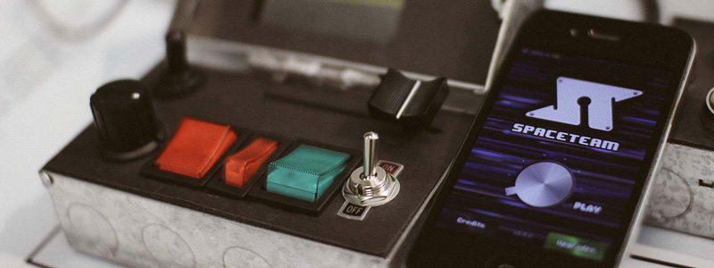

Command Control is a multiplayer game inspired by the IOS game Spaceteam. Consisting of 3 physical controllers with buttons, switches, dials and sliders that facilitate a fun group gaming experience. Watch as people begin shouting out crazy control names and sounding ridiculous in the process.
About
Command Control was created for a final university project while studying for a BSc (Hons) Digital Art and Technology at Plymouth University by myself Sam Billingham. The idea was derived out of a number of goals. Creating something physical. learning new skills and pushing the boundaries of current skills. An established joy for Spaceteam.
The controls used to play are housed within socket boxes which reflects the Si-Fi space aesthetic of the whole game. An amalgamation of dials, rockers, toggle switches and sliders make up each players inputs. A map of buttons can be seen on the controller screens showing the current names for controls which change each level. Players work together to press the right inputs to keep the ship flying. As the game progresses the messages that appears on individual screens may or may not relate to an input on their own controller. Players must shout out instructions to insure everything is activated, deactivated or reconfigured to the correct level before the timer runs out.
The number of correct inputs needed to keep the ship operational increases while the time allocated for completing operations decreases with each new zone entered. With the eventual ships destruction players are presented with stats to show how many switches and dials they successfully configured.

In the week prior to command control being displayed as part of the degree show I added a physical start and reset button. The start button is a large red push button and allows players to easily start a new game at any point. The key switch works as a hardware reset while adding to the appearance it also acts as simple way for players to reset the system if anything goes wrong.
Inspiration
If you're thinking this sounds familiar then you've most likely played Spaceteam. Spaceteam is a fantastic IOS game created by Henry Smith, one which my friends and I have had great fun playing. Spaceteam is great and I wanted to pay homage in the best way I know how by taking the time to create something that expands its core concepts. I always thought the game deserved some physical controls to interact with. I hope others who enjoy Spaceteam can appreciate Command Control.
P.S Spaceteam is a lot of fun, if you have an IOS device and some friends you should go download it right now.
How it Works
There are three main parts that work together for Command Control to run as it does. An Arduino Mega 2560 is used to control and relay the sates of all 23 inputs, a Node.js backend controls the logic for the game and three android phones which have web socket enabled browsers are used to display game screens to the players.
The program running on the Arduino broadcasts the new state of each input whenever it changes using this library for pub/sub communication with the MQTT protocol. The Node.js App is running a Node broker which passes these states to be used with the game logic. This same state is then broadcast using web sockets to the controller screens.
A basic run though involves a player pressing the big red button which starts a new level. The browsers redirect to the level screen, stats, health and level systems are reset. Starting each level players have 10 seconds to look at their new button names. All Players begin receiving random instructions. If an instruction is correctly input or the time runs out the message disappears and that player receives a new message. However, if the timer runs out or an incorrect button is pressed at any time the ship loses health. levels are randomly generated and the number of successful inputs required to pass increase over time.
Each input needs to be connect separately to the Arduino so is soldered to a signal wire, ground wire and power wire where required. These wire then run from the individual controls to the box that houses the Arduino Mega and far too many wires. The shield allowing connection to the internet is contained in a separate box to allow easy switching between Wi-Fi and Ethernet.
Command Control has been through a number of iterations in the showcase video the system is powered via 9v battery included in the main control case and connection to the game server is via a Wi-Fly shield. The version of Command Control on display at Plymouth University was a slight variation that had the starting controls added, constant mains power and connection via an ethernet shield.
You can find some more info from my development stages on sambillingham.com here & here.